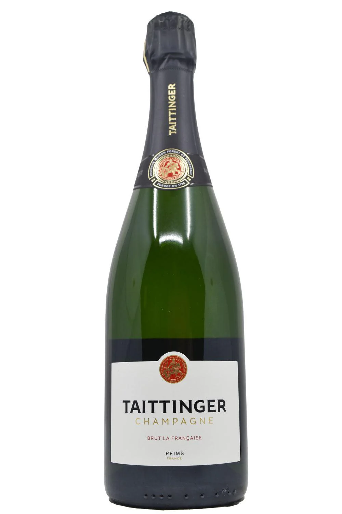
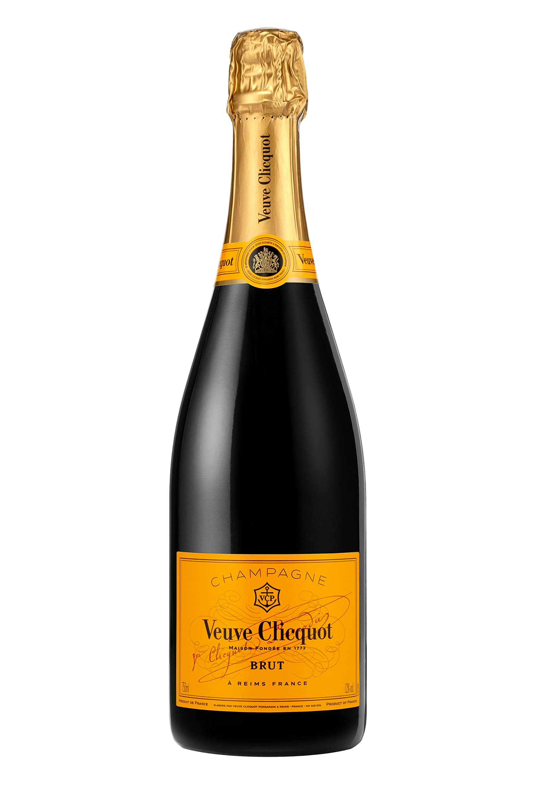
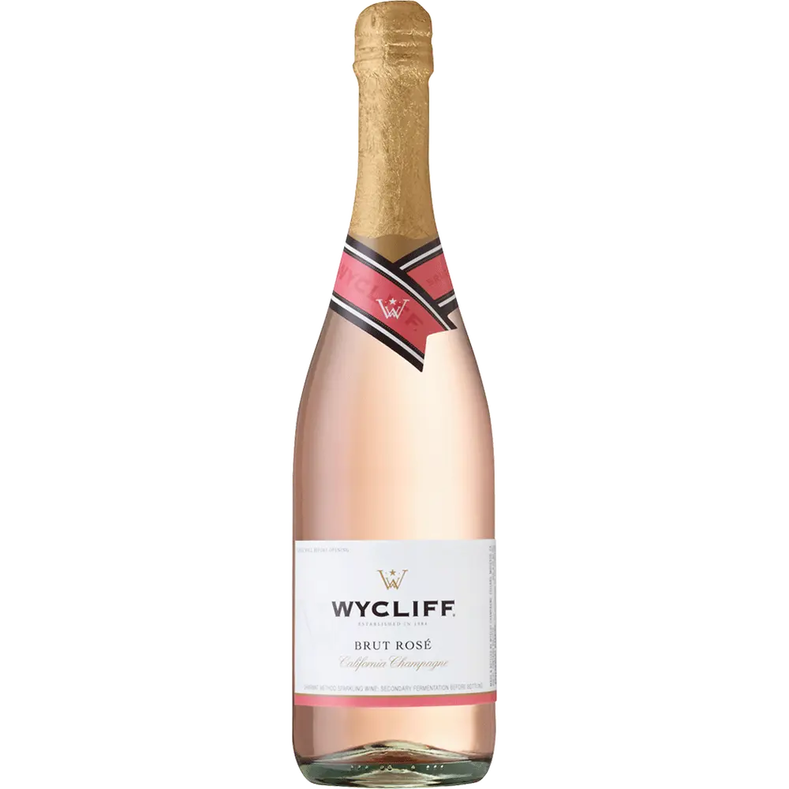

Explore Our Sparkling & Rosé Wines

Taittinger Brut
France - Elegant and refined with hints of brioche and citrus.
Rated 94/100 by Wine Spectator.

Veuve Clicquot
France - Bold and crisp with hints of apple and honey.
C Rated 93/100 by James Suckling.

Fleur de Prairie Rosé
France - Delicate and floral with notes of strawberry and melon.
Rated 91/100 by Wine Enthusiast.

La Marca Prosecco
Italy - Fresh and crisp with citrus and green apple notes.
Rated 90/100 by Decanter.

Wycliff Brut Rosé
California - Light and fruity with hints of strawberry and raspberry.
Rated 88/100 by Wine Enthusiast.